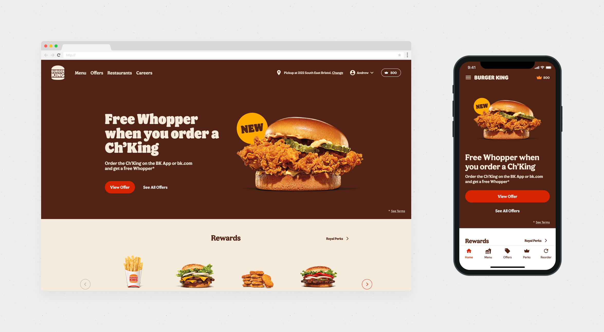
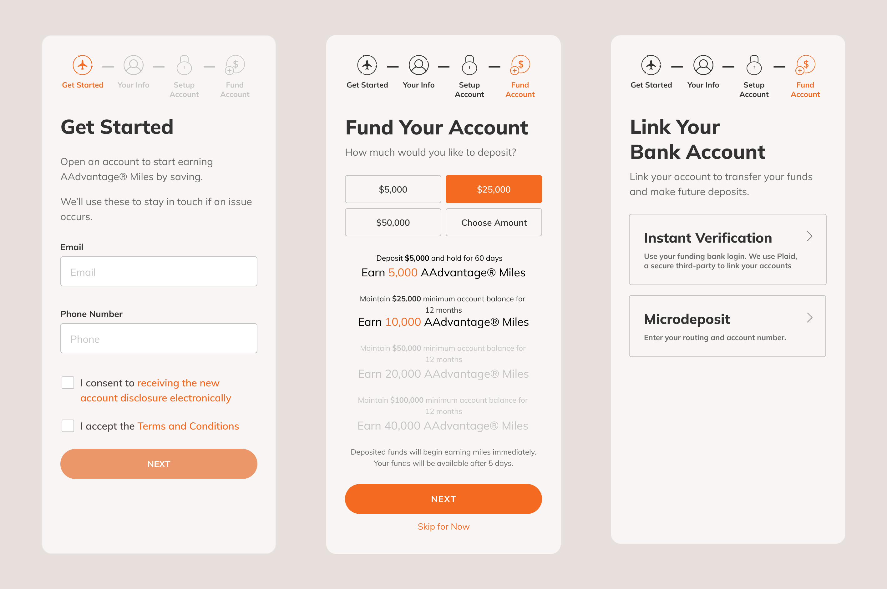

James Song
I co-create digital experiences with clients to solve both customer and business problems. I've been designing for 8+ years for clients ranging from startups to Fortune 200 firms.

At-Home Oral Health Testing
Designing an app for an at-home oral health testing kit to help understand their risks and receive tailored recommendations on how to improve oral health.

Generating Customized Study Materials for University TAs with AI
Concept to enable Teaching Assistants create tailored materials for office hours on-the-fly

Contactless 2-Way Texting for a COVID-19 World
Designing 2-Way Texting to enable a tax preparation firm to maintain customer relationships across over XYZ franchises

Building Trust to Reduce Onboarding Drop-Offs
Uncovering drop-off drivers to redesign onboarding and introducing more data-driven thinking for a digital attacker bank.